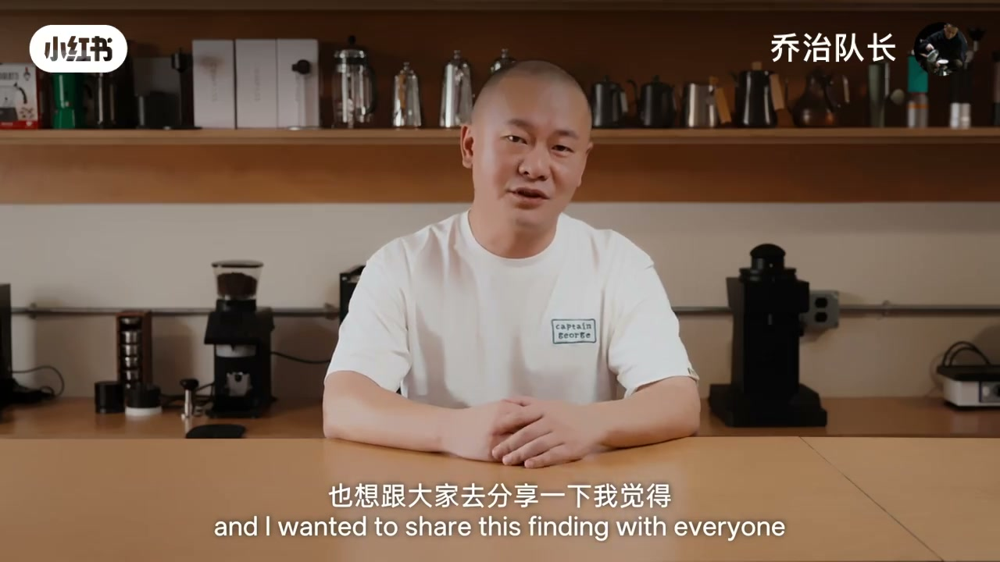
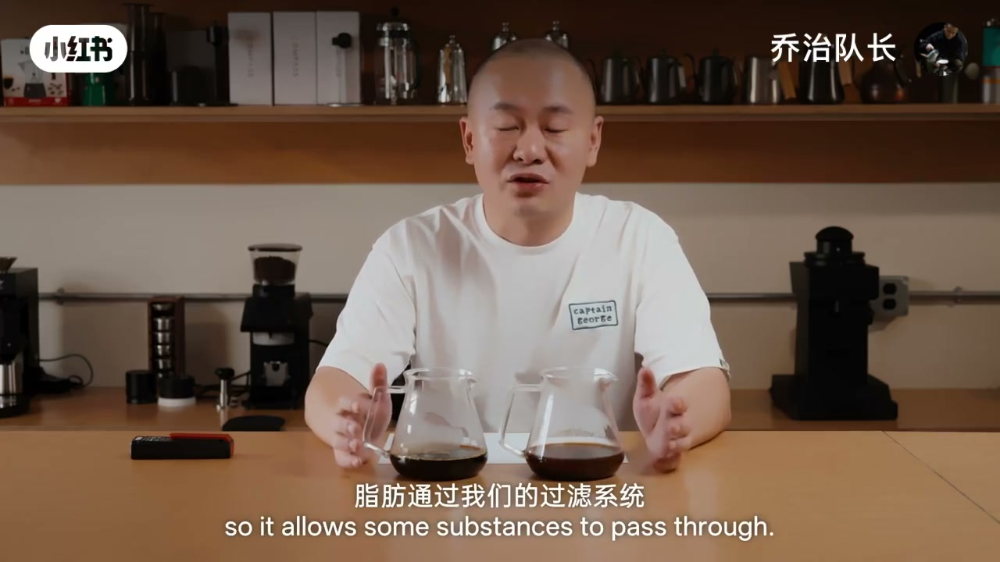
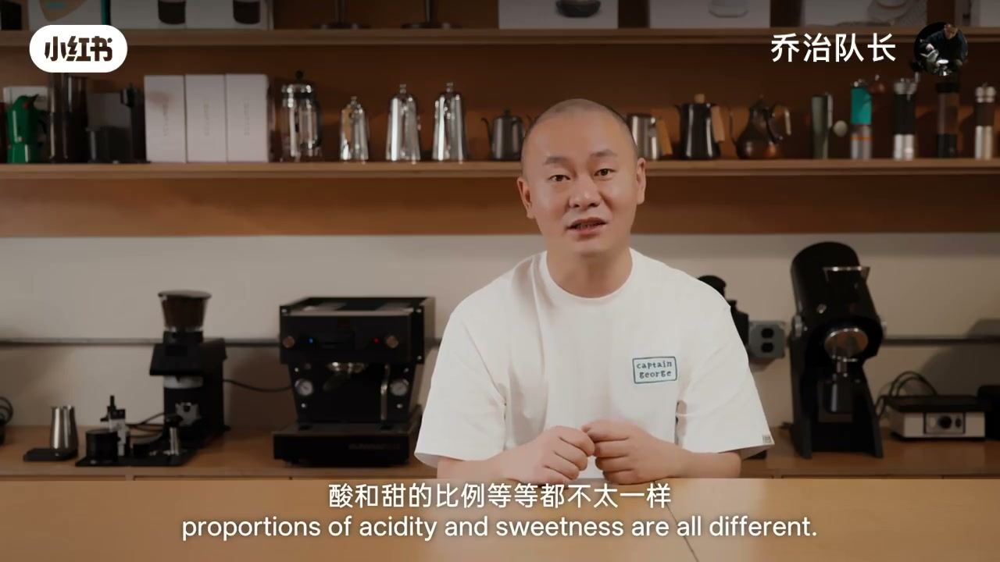
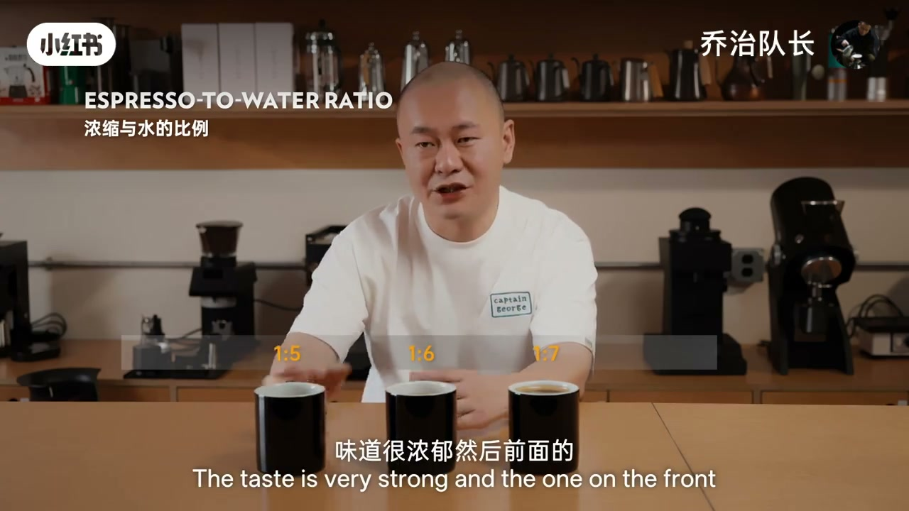
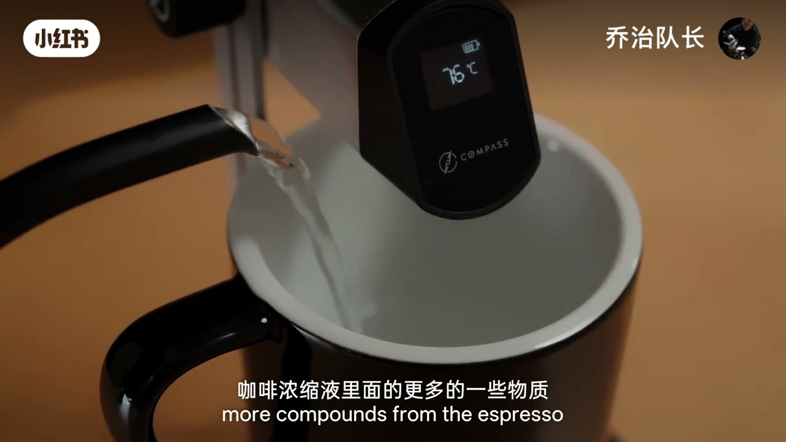
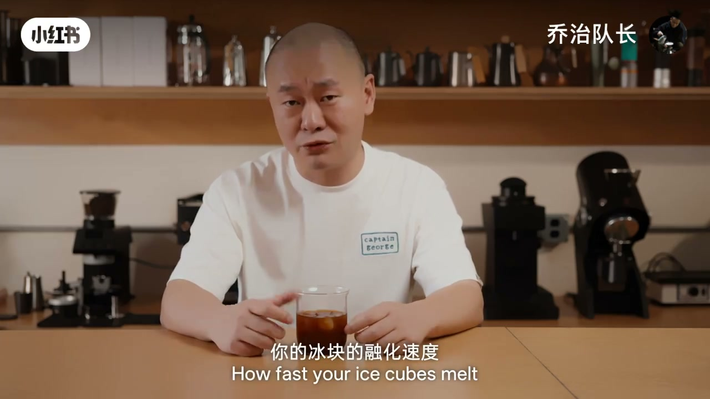

内容要点
美式听起来只是浓缩加水，却牵涉加水量、浓缩与水的比例、水温、浓缩的萃取率与浓度、以及你开始喝时的杯温。作者先用 Crema 与激光笔对照美式与手冲：金属滤网让更多脂肪通过，口感更圆润、风味更耐放。再钉死两个基底概念——萃取率管平衡，浓度管感官强度——并按烘焙深度给出粉液比与 25–32 秒萃取时间窗口。随后用同一 36g 浓缩做 1:5 / 1:6 / 1:7 稀释对比，给出浅/中/深烘的个人稀释建议；实测多数豆子「先水后浓缩」更饱满；较高水温混合后冷却对比，高水温一侧更扎实。收束到冰美式：它是快饮、动态稀释饮料，提供浅烘与深烘两套冰+水模板，目标是 25–30 分钟内浓度仍约 ≥1.2%。
知识结构
美式表面简单，实际覆盖比例、水温、萃取与饮用时机；作者视为宝藏咖啡。
Crema 易被骗；激光穿透手冲却难穿透美式——金属滤网保留更多脂肪，口感与风味持久度更强。
萃取率决定平衡（酸/糖/大分子）；浓度决定感官强度；无绝对参数，按豆子找方案。
深烘约1:1.8–1.9、中深约1:1.9–2.0、浅烘约1:2.0–2.2；越深越不宜拉大粉液比。
高压体系下研磨主要决定萃取时间；家用/店用建议约25–32秒落入酸甜平衡区。
同36g浓缩做1:5/1:6/1:7；浅烘偏浓稀释、深烘可更稀；最终以个人偏好为准。
大量测试：多数豆子先水后浓缩，醇厚度与风味饱满度更高（机制未完全解释）。
不同加水温度冷却到同温后仍可差很多；倾向较高水温混合；同时提醒勿过烫伤食道。
冰美式是动态浓度饮料；浅烘120冰+120水、深烘120冰+140水再加浓缩，保25–30分钟浓度约≥1.2%。
概括性方法论：搭好框架，在家复现理想美式。
先做出好喝浓缩（烘焙对应粉液比 + 时间判磨）→ 再按口味选稀释比 → 先水后浓缩 + 偏高水温 → 冰美式用「冰+水」模板扛动态融化。
第二课开场：一杯日常，却是多变量系统
[00:00 → 00:49]彭志阳（乔治队长）开场：咖啡教室第二课主题是「如何制作一杯好喝的美式」。它听起来像浓缩加水，却牵涉加多少水、浓缩与水的比例、水温几度、基底浓缩的萃取率与浓度，以及你大概到多少杯温才开始喝——每个因素都在改体验。
作者坦言美式不起眼、非常日常，却是他的宝藏咖啡、最爱之一。立题完成：不是教你「倒水」，而是把理想美式拆成可调的方法论框架。

哪杯是美式：Crema 会被骗，激光不会
[00:49 → 02:33]趣味实验：两杯咖啡，多数人会凭表面 Crema 指认美式。作者用勺子抹掉 Crema 后，肉眼几乎难辨美式与手冲。真正的判别来自激光电筒：手冲液体能轻易被穿透，美式则难以穿透。
原因指向滤材：浓缩机的金属滤网（滤杯/滤材系统）允许部分脂肪通过，而纸滤手冲会挡下更多油脂。结果是美式口腔触觉更圆润顺滑，风味持久度也略高——外卖手冲放二十分钟可能已明显走味，美式放四十分钟、五十分钟仍能保住一些风味。这段把「美式是什么」从外观叙事拉回物理与感官。

先钉死两个词：萃取率管平衡，浓度管强度
[02:33 → 04:09]进入美式细节前，先补两个会直接影响 Espresso（浓缩基底）质量的概念。萃取率：所用咖啡豆中有百分之多少可溶物质进入杯中——你在控制平衡感，决定有机酸、糖类与更大分子物质的比例，也就决定基底「喝起来像什么」。
浓度更直观：已萃出的可溶物占整杯液体的百分比（例如 1% 浓度即液体里约有 1% 来自咖啡可溶物）。浓度决定酸、风味、香气、甜、苦等各项感官的强度。没有绝对正确值：烘焙度、风土、品种带来的酸甜比例不同，必须具体问题具体分析，按豆子找最合适方案。好喝美式离不开好喝浓缩原液——原液对了，稀释才有机会对。

家用速调公式：烘焙越深，粉液比越收
[04:09 → 05:24]作者给出便于在家快速调整的粉液比参考：深烘约 1:1.8–1:1.9；中深烘约 1:1.9–1:2.0；浅烘约 1:2.0–1:2.2。有趣现象：烘焙越深，建议粉液比反而越小——因为深烘更容易萃取，粉液比拉太大容易把苦味与粗糙口感一起带出来。
强调这不是绝对值：烘焙机、膨胀率、处理法都会偏移，公式只给方向。有了粉液比，下一环是研磨度。
研磨度：高压体系里，用时间当仪表盘
[05:24 → 06:15]在浓缩的高温高压系统中，研磨度大部分决定萃取时间。靠肉眼或抹粉很难找到合适研磨——建议用萃取时间判断研磨是否合适。家用或咖啡店场景，作者建议把萃取时间控制在约 25–32 秒：这个窗口更容易得到酸甜平衡、负面较少的浓缩。
至此，理想美式的「基底层」搭好：按烘焙选粉液比，用时间校准研磨，先保证原液好喝。
稀释对照：1:5 浓郁带苦，1:7 空淡，中间找心仪点
[06:15 → 08:06]三杯同起点：都是 36g 浓缩，分别按浓缩:水 = 1:5、1:6、1:7 加水。1:5 味道浓郁，前段香甜与焦糖化调性很靠前，但尾韵苦味偏强偏长；1:6 酸甜略弱，尾韵苦不再那么突兀；1:7 则显空、强度不够，焦糖甜香气与酸质都模糊，像一杯淡淡的咖啡。
设计原则：萃取完成后用不同比例找自己最喜欢的点。若要建议——浅烘作者习惯约 1:5–1:5.5，中烘约 1:5.5–1:6，深烘约 1:6–1:7；但仍完全可以按个人喜好设定。

先水还是先浓缩：多数豆子，先水更饱满
[08:06 → 08:47]网络常争：先在杯里加水再注入浓缩，还是先挤浓缩再加水？作者基于大量测试与日常工作观察：无论深烘还是浅烘，多数豆子都是先水后浓缩时，醇厚度、风味持久度与饱满度明显更高。具体机制作者也不完全清楚——「离谱又现实」——但作为可执行规则足够清晰。
水温是钥匙：高温混合更扎实，但别烫着喝
[08:47 → 10:53]另一发现：杯中加入不同温度的水，再冷却到相同饮用温度，喝起来仍可天壤之别。较高水温有机会让浓缩液里更多物质更充分溶解，风味更多、扎实度与醇厚度更好一点；作者坦承没有仪器论证微观变化，但按日常经验建议用相对较高水温与浓缩混合。
现场对比：约 85℃ 热水一侧（中深烘黑猫拼配）呈现扎实甜感、圆润口感与较长余韵，仍带一点果酸；低温稀释一侧入口强烈但余韵短。健康提醒：不要迷信「咖啡要趁热喝」——食道是「一块生肉」，过烫对食道健康并不友好。热美式方法论到此收束，下一问是冰美式。

冰美式：快饮 + 动态浓度，用冰水模板扛融化
[10:53 → 12:53]冰美式比热美式更复杂：冰块量、水量、浓缩与融化中冰块的叠加，会让浓度持续变化。作者把热美式看作长饮、冰美式看作快饮——冰块融化速度、形状、室内外/打包/车内等环境温度都会改浓度。
两套基础模板：浅烘可用 120g 冰块 + 120g 水再加浓缩；深烘建议 120g 冰块 + 140g 水再加浓缩并搅拌均匀。此时浓度可能约 1.45% 左右——听起来偏浓，正因为冰美式是动态饮料，折中方案要确保约 25–30 分钟内仍能维持约 1.2% 以上浓度。这是片中「非常好用」的公式收束。

收束：把框架带走，在家复现理想美式
[12:53 → 13:08]今天用概括性、总结性的方式给出可带走的方法论，分享作者心中理想的美式咖啡。期待你在家也能做出一杯好喝的美式——先搭框架，再按豆子微调。